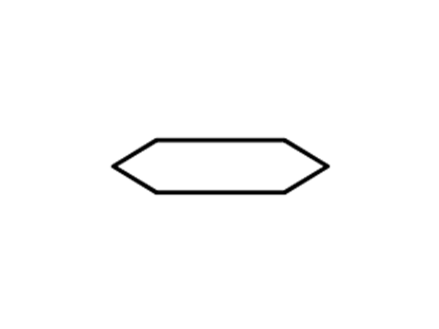

-
A) IDENTIFICAR EL PROBLEMA
Reconocer o distinguir que determinada cosa es la misma que se busca o se supone.
Examinar detalladamente, separando o considerando por separado sus partes, para conocer sus características o cualidades, o su estado, y extraer conclusiones.
-
C) ELABORAR EL ALGORITMO QUE DA SOLUCIÓN AL PROBLEMA
"ALGORITMO"
serie de normas o leyes específicas que hace posible la ejecución de actividades, cumpliendo una serie de pasos continuos que no le originen dudas a la persona que realice dicha actividad.
"Definición de algoritmo" - conceptodefinicion.de - diciembre 21, 2016, A: None
Sin tener dudas de lo que se requiere como solución al problema, procedemos a escribir el algoritmo
| Paso 1: |
INICIO |
| Paso 2: |
TENER TRASTES |
| Paso 3: |
TENER AGUA |
| Paso 4: |
TENER JABÓN |
| Paso 5: |
TENER ESPONJA |
| Paso 6: |
TENER FIBRA METALICA |
| Paso 7: |
CLASIFICAR MIS TRASTES |
| Paso 8: |
HACER LA ENJABONADURA |
| Paso 9: |
LAVAR LOS TRASTES |
| Paso 10: |
LAVAR LOS VASOS |
| Paso 11: |
LAVAR LAS OLLAS |
| Paso 12: |
LAVAR LOS SARTENES |
| Paso 13: |
LAVAR LAS CASUELAS |
| Paso 14: |
LAVAR LOS CUBIERTOS |
| Paso 15: |
PONER LOS TRASTES EN EL |
| |
ESCURRIDERO |
| Paso 16: |
PONER LOS VASOS EN EL |
| |
ESCURRIDERO |
| Paso 17: |
PONER LAS OLLAS EN EL |
| |
ESCURRIDERO |
| Paso 18: |
PONER LOS SARTENES EN EL |
| |
ESCURRIDERO |
| Paso 19: |
PONER LAS CASUELAS EN EL |
| |
ESCURRIDERO |
| Paso 20: |
PONER LOS CUBIERTOS EN EL |
| |
ESCURRIDERO |
| Paso 21: |
FIN |
-
D) HACER EL ANALISIS DE LOS DATOS
Para realizar un algoritmo necesitamos conocer que tenemos que tener para inciar, no podemos lavar platos sin platos ya que es una incoherencia.
Obviamente el paso numero 1 es el "Inicio" ya que es esencial iniciar la actividad para poder resolverla
A partir de aqui el algoritmo se conforma de la siguiente manera:
| ENTRADA |
| Son los valores obtenidos del programa que representan al mundo real. |
| PROCESO |
| Descripción de las operaciones que se llevarán a cabo con las entradas anteriores |
| SALIDA |
| Son los valores resultantes al transformar los valores de la entrada |
Y por ultimo asi como el primer paso fue el inicio, el ultimo será el Fin
-
E) ELABORAR DIAGRAMAS DE FLUJO
DIAGRAMA DE FLUJO
Es la representación gráfica-simbólica del algoritmo, nos indica el flujo lógico de cada paso definido.
PROPIEDADES
1.- Un diagrama de flujo siempre se realiza de arriba a abajo y de izquierda a derecha
2.- Las flechas de flujo siempre tocan al simbolo superior y al simbolo inferios
3.- Las flechas de flujo nunca se cruzan
SIMBOLOS
El ovalo indica el inicio y el final del diagrama de flujo Indica su uso con la palabra a su interior
El trapecio indica recibir en una variable un dato de entrada usando el teclado. Poner la variable a su interior
El cono horizontal indica enviar el contenido de una variable a salida, representa el monitor o pantalla.
Podemos indicar que mande de salida un mensaje de teto poniendole comilla sencilla en los extremos.
El romboide indica recibir en una variable un dato de entrada usando el teclado o enviar un dato contenido en una variable en la salida, comunmente monitor o pantalla.
Al usrlo debemos indicar en su interior la palabra "Leer o Escribir" segun su uso.
Podemos indicar que mande una salida de mensaje de texto

El rectangulo indica procesos de datos. Hacer un calculo de operaciones aritmèticas.
Para asignar el calculo aritmético a una variable se usa "="
-
F) CREAR EL PSEUDOCÒDIGO DE LA SOLUCIÓN
Es la presentación narrativa de cada paso del algoritm; esta narrativa obedece a la lengua narrativa del programador.
-
G) CREAR EL CODIGÓ DE LA SOLUCIÓN
LENGUAJE DE PROGRAMACIÓN
LENGUAJE DE PROGRAMACIÓN: es un conjunto de palabras con cierta base sintática y semántica, para construir instrucciones que forman un programa de computadora.
Comprende un conjunto de palabras reservadas propias las cuales tienen su base sintática de uso y su base semántica de forma.
C#
Cuando nombramos las variables, hay que tener en cuenta para C# las mayúsculas y las minúsculas son diferentes.
Aplicandolo a varibles
Se usa el método WriteLine() o el método Write() de la clase Consoles usando una cadena de formato y una lista de variables.
Se usa el método ReadLine() de la clase Consoles y nos regresa una cadena o texto que contiene lo que escribió el usuario con el teclado.
-
H) HACER PRUEBAS DE ESCRITORIO
Las pruebas de escritorio se hacen en el boton de la barra de herramientas "DEPURAR"


 8
8


.jpg)


 1
1 5
5 6
6 7
7